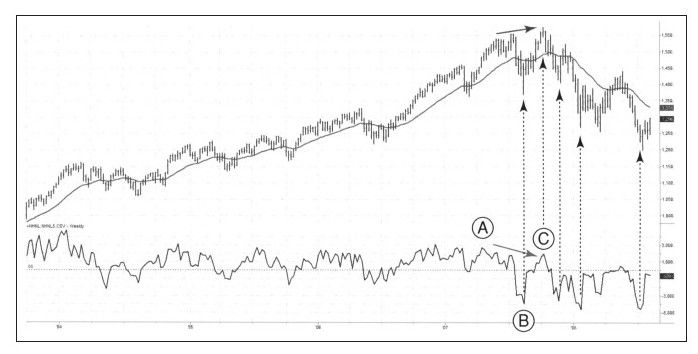

股市不骗人，就像海浪自己运动到岸边，你读懂了海浪就会知道何时该游泳、何时该冲浪、何时该航行及何时该上岸。学习海浪的语言需要耐心和经验。市场也一样，市场也以其自有的方式告诉我们它的状态和信号，技术分析师的工作就是理解市场语言。
2007年的历史大顶时市场发出什么样的信号？我们一起看两幅周线图，一副添加有NH-NL指标，另一幅图的指标是我常用的四个指标（回想一下第一部分介绍的“五颗子弹”规则）。
为什么以周线图开始？这是个非常重要的原则，市场同时在不同时间框架内运动，可能在月线图中显示上涨趋势，但在周线图中显示下跌趋势，日线图中也显示上涨趋势，日内显示下跌趋势，所有这些都发生在同一时刻。多数人只关注一个时间框架，通常是日线图，所以市场更深一层的信息他们看不到。
我使用的交易系统是三重过滤网系统，使用该系统的第一步就是选择喜欢的时间框架。我喜欢按日线交易，在趋势未被我认定为坚定的多头趋势之前，我都不会以日线图作为初始观测周期。在看日线图之前，我通常先看周线图并依此做出战略决策，在做出了做多或做空的战略决策后，我才开始看日线图以寻找具体的入场点。
如图9-3所示，2007年指数见顶时，NH-NL指标已经显示出经典的顶背离形态：点A时，标普500指数上涨，新高新低指标跟着上涨；点B时（这是在我看到“上海劳工短缺”的时候发生的），市场下跌，新高新低指标低于零，这是对牛市的一次警告。我把这种情况称之为“跌破了牛背”。之后标普500指数尽管不如中国市场那样疯狂，但还是反弹并创出新高，而同时NH-NL指标却没有创出新高。

价格新高但NH-NL指标没有出现新高意味着牛市遇到麻烦，当NH-NL指标从C点开始下跌时，它发出了卖出并做空的绝佳信号，在图中用右侧下方的箭头表示。没有比这个更精确的卖出点了！